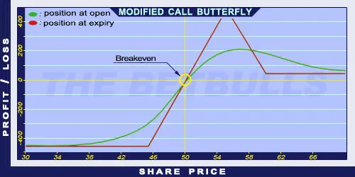

Description and use
Modified Call Butterfly is similar to Long Call Butterfly, but the difference between the strike of the middle Call and the higher Long Call is smaller than the difference between the strike of the lower Call and the other middle Call. Consequently, the profit is maximised when the share price closes close to the middle components’ strike price. This strategy requires the investor to pay close attention to details. To establish the position, the trader must buy a lower strike ITM Long Call, sell two middle ATM Short Calls, and buy a higher strike OTM Long Call. The investor can profit from increasing share prices or the share prices moving within given limits. Despite the attractive risk/profit ratio, the maximum profit is limited. The direction of the market is neutral or moderately increasing. The expected profit is relatively high, given the low costs. The expiration should be at least three months.
- Type: Neutral, Bullish
- Transaction type: Debit
- Maximum profit: Limited
- Maximum loss: Limited
- Strategy: Neutral strategy
Opening the Position
Modified Call Butterfly Option Positions
- Buy a lower strike (ITM) Call option.
- Sell two middle (ATM) Call options.
- Buy a higher strike (OTM) Call option.
All options must have the same expiration. The strategy contains only Call options.
Steps
Entry:
- Make sure the share prices are moving within certain limits.
Exit:
- The position can be closed only before expiration.
Basic Characteristics
- Maximum loss: Net debit.
- Maximum profit: Difference between the low and middle Calls’ strike price - Net debit.
- Time decay: Time decay has a positive effect on the value when the position is profitable, and a negative effect when the position is lossmaking.
- Breakeven point: Lower strike price + Net debit.
Advantages and Disadvantages
Advantages:
- The investor can profit from share prices moving within given limits.
- Low costs.
- Relatively high risk/profit ratio.
Disadvantages:
- Potentially higher profit is only possible close to expiration.
- Limited profit.
Closing the Position
Buy back the Short Puts and sell the Long Puts.
Mitigation of Losses
Close the position the above-mentioned way.
Example

Modified Call Butterfly strategy example with ABCD traded for $50.00 on 17.05.2017. The investor engages in the following:
- Buy a Long Call option with a strike price of $45.00, expiring in June 2017, for a premium of $6.12.
- Sell two Short Call options with a strike price of $55.00, expiring in June 2017, for a premium of $1.30 each.
- Buy another Long Call option with a strike price of $60.00, expiring in June 2017, for a premium of $0.50.
- Net debit: $4.02
- Maximum loss: $4.02
- Maximum profit: $5.98
- Temporary risk/profit: $0.98
- Breakeven point: $49.02